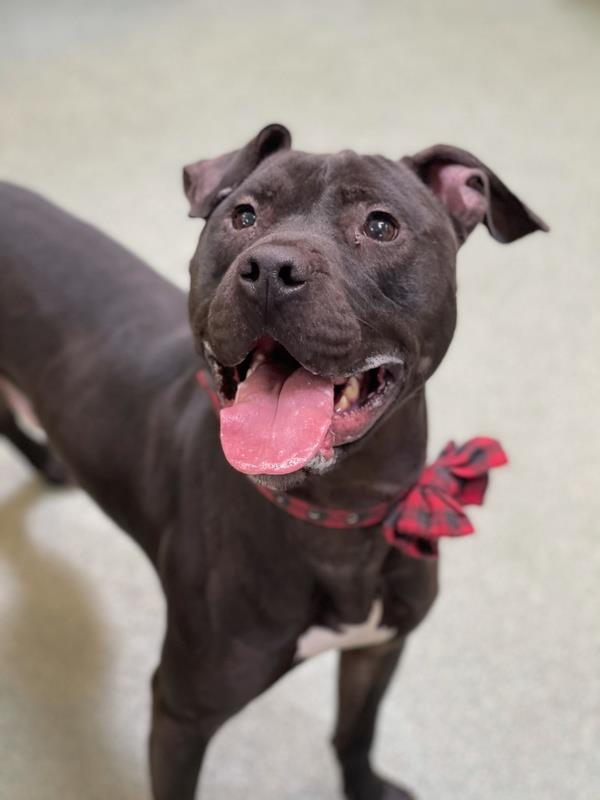

| Type | ||
| Breed | ||
| Second Breed | ||
| Sex | ||
| Color | ||
| Spayed / Neutered | ||
| Age | ||
| Size |
Animal Identification
Animal ID:
Please take note of the Animal ID before contacting us

A Little Bit About Me
Where can you find me?
I am at the Kenton County Animal Shelter location.
You can contact me by:
Phone: (859) 356-7400
Address: 1020 Mary Laidley
Ft Mitchell, KY 41017
We unfortunately can not put animals on HOLD over the phone.
Dear Customer, please understand to prevent disappointment, this website is live and updates frequently, there is chance that when you would arrive at our location the animal you have an interest in might have been adopted or another party might be going through the adoption process at that present time.